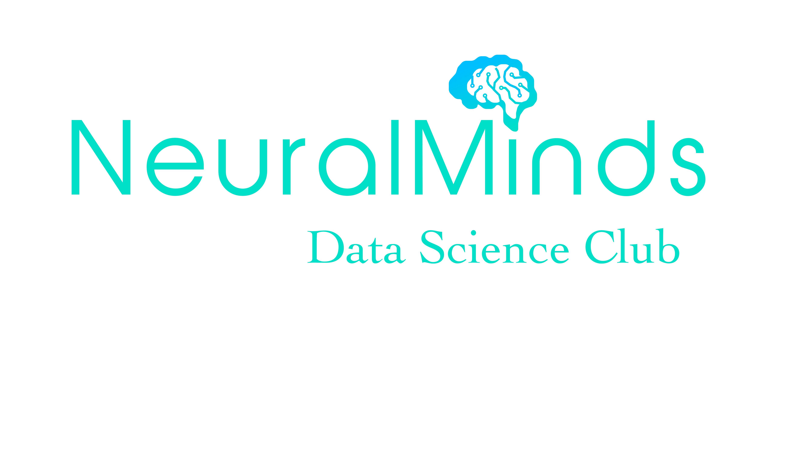

ABOUT :
Welcome to BLRNeuralMind Data Science Club! It is the place where data enthusiasts from Academia and industry meet who are willing to learn, explore and contribute to the concepts related to Machine Learning and Artificial Intelligence. It is one of a kind:
- Want to learn basics and advance concepts of Machine Learning and Deep Learning?
- Itching to develop clear understanding of the vast AI domain, be it NLP, Computer Vision, Reinforcement Learning, Robotics or IoT, get ready for the new deep-tech world?
- Wish to keep learn the latest techniques and master the art of building algorithms?
- Wish to collaborate and network with likeminded enthusiast?
If your answer to any of the above questions is a YES, then you are at right place!
We are working on the cutting-edge of AI, ML, DL and RL with the focus to leverage modern research in these areas. We are a team of globally eminent AI experts who are will revolutionize the field of AI through R&D. Over time, we will Host a series of advanced AI Workshops and Meetups for global stage!
BENEFITS :
- Access Content on Computer Vision, NLP, Reinforcement Learning, TinyML, Robotics etc.
- Get exclusive access to freemium courses and workshops.
- Become part of a premium makers community of developers, researchers and scientists.
- Lifelong Learning on the latest AI techniques and technologies.
TARGET AUDIENCE :
- Professionals who are interested in Artificial Intelligence, Machine Learning and Deep Learning and want to continuously upskill and understand new developments happening in this domain.
- IT professionals who want to work in Artificial Intelligence
- Graduates from Computer Science, Engineering, Maths or Science background looking to build a career in AI and Machine Learning
- Students who want to get skilled in Machine Learning, Deep Learning, Reinforcement Learning etc.
PROJECTS AND RESEARCH INTERESTS :
Projects happening in our Lab :-
- Abstractive Summarization
- Semantic Search
- Object and Face Detection
- Sentiment Analysis
- Voice Cloning with GANs
- and many more
Research happening in our Lab :-
- Learning
- Natural Language Generation
- Multi-Task Learning
- Meta Embeddings
- and many more